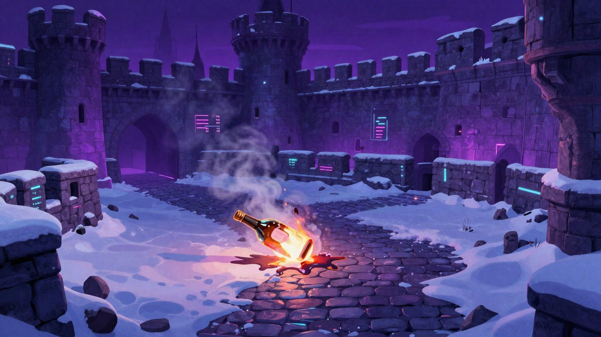

Counter-Strike 2 je dobio zimski remake mape Cobblestone, Molotovljev koktel topi snijeg

Valve je u Counter-Strike 2 vratio Cobblestone u potpuno prerađenoj zimskoj verziji. Molotovljev koktel može otopiti snijeg na mapi, a vatra ostavlja tragove na metalu i asfaltu. Mapa je dostupna u više modova, a u Premier se očekuje nakon turnira PGL Major Singapore 2026.
Valve je objavio veliki update za Counter-Strike 2 u kojem se vraća još jedna legendarna mapa, Cobblestone. Nova verzija je zimska, a snijeg koji prekriva mapu može se otopiti Molotovljevim koktelom.
Cobblestone je debitirao prije 26 godina u beta verziji Counter-Strikea. U CS:GO je stigao 2013. s updateom Winter Offensive i s vremenom postao stalni dio esport scene. Nakon spornih izmjena u Halloween updateu 2018. mapa je nestala iz competitive odabira mapa. U početni set mapa Counter-Strikea 2 na jesen 2023. nije ušla, no datamineri su još 2022. otkrili da Valve planira njezin povratak.
Što je novo na mapi
Prerađena verzija za CS 2 ima nove rute i lokacije za istraživanje. Prepoznatljivi elementi originala su zadržani, pa će se veterani mape brzo snaći.
Najveća novost u odnosu na originalni Cobblestone je zimska izvedba. Molotovljev koktel može rastopiti snijeg koji je zasuo mapu. Vatra je dobila i novu mehaniku. Ostavlja tragove na drugim površinama, među ostalim na metalu i asfaltu.
Načini igre i Premier
Prerađeni Cobblestone dostupan je u modovima Competitive i Casual, a također u Wingmanu, Deathmatchu i Cleaning Upu. U Premier se očekuje nakon turnira PGL Major Singapore 2026, koji traje od 25. studenoga do 13. prosinca.
Uoči Majora u in-game trgovinu dodane su tematske naljepnice. Nakon kritika dinamičkih cijena stickera za IEM Cologne Major 2026, Valve se vratio na fiksne cijene.
Izvor: 3DNews
Povezani članci
 Switch 2 jailbreak dobio je alat nx2-relink: dumpane igre sada se mogu pokretati na hakiranim konzolama25. studenoga 2026.
Switch 2 jailbreak dobio je alat nx2-relink: dumpane igre sada se mogu pokretati na hakiranim konzolama25. studenoga 2026.- Intergalactic: The Heretic Prophet potpuno je igriv i u završnoj fazi produkcije12. studenoga 2026.
- Zelda: Ocarina of Time Remake je dobio 9 od IGN-a uoči izlaska na Switch 24. studenoga 2026.